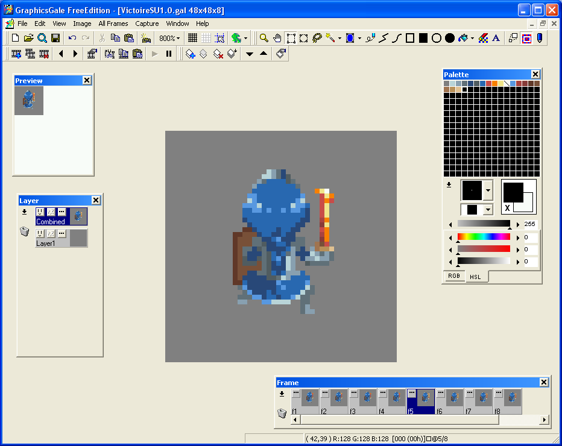
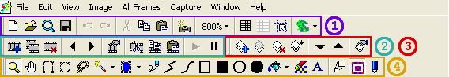
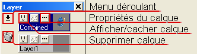
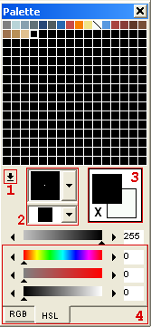

Introduction à GraphicsGale
GraphicsGale est un outil très puissant pour quiconque s'intéresse au pixel art, et propose une version d'essai gratuite qui reprend la majorité des fonctionnalités de la version complète (sauf les formats comme .gif, .cur, .ani et . ico qui ne sont pas supportés) téléchargeable ici.
GraphicsGale permet notamment l'utilisation de plusieurs frames pouvant elles-mêmes contenir plusieurs calques et gère la transparence. C'est également un outil de gestion des palettes restreintes très puissant, mais trêve de bavardage, entrons dans le vif du sujet.
L'interface de GraphicsGale
Étudions de plus près le fonctionnement de l'interface, dont voici un aperçu:

Les menus

Les blocs (déplaçables) sont abordés dans l'ordre affiché ci-dessus et les icônes sont abordées de gauche à droite.
Bloc n° 1: Options générales
- Nouveau : Est-il vraiment nécessaire de détailler l'utilité de cet outil ? Il permet simplement la création d'un nouveau document. (Ctrl + N)
- Ouvrir : Ici aussi, rien de bien extraordinaire. Ce bouton provoque l'ouverture d'un explorateur vous permettant de sélectionner un document à ouvrir. (Ctrl + O)
- GaleBrowser : Ouvre le GaleBrowser, un outil de recherche plus perfectionné (compris dans le pack d'installation de la version d'essai) qui permet entre autre de prévisualiser les fichier Gale (.gal). Je ne m'en suis jamais servi, donc je ne m'étendrai pas dessus.
- Sauvegarder : Sauvegarde le fichier sélectionné. (Ctrl + S)
- Précédent : Annule la dernière action effectuée. (Ctrl +Z)
- Refaire : Refait la dernière action annulée (Ctrl + Y)
- Couper : Copie la sélection vers le presse-papier et la supprime du fichier. (Ctrl + X)
- Copier : Copie la sélection vers le presse-papier. (Ctrl + C)
- Coller : Copie l'élément présent dans le presse-papier. (Ctrl + V)
- Coller comme nouvelle image : Crée un nouveau document à partir de l'élément du presse-papier.
- Grossissement : Permet de choisir le grossissement de l'image. L'option setup permet de configurer un grossissement personnalisé.
- Grille : Affiche la grille de délimitation des pixels.
- Grille personnalisée : Affiche une grille au dimension réglables (très, très pratique). L'option input permet de créer une grille paramétrable et l'option setup permet de définir de nouvelles grilles par défaut.
- Curseur aimanté : Active ou désactive le magnétisme du curseur. Le curseur aimanté se place automatiquement dans le bord supérieur gauche d'une case.
- Peau d'oignon : Cette option permet de visualiser en transparence la frame précédente ou/et suivante. Notez bien que la transparence ne dépend pas de la profondeur des couleurs (marche même en 1bit)
Bloc n° 2: Les outils
- Loupe : Lorsque cet outil est sélectionné, le clic gauche provoque l'augmentation du grossissement et le clic droit sa diminution.
- Outil main : Cet outil vous permet de déplacer librement l'image en maintenant une pression du clic gauche.
- Sélection rectangulaire : Définit une plage de sélection rectangulaire à partir du point sélectionné en maintenant le bouton gauche de la souris enfoncé. Notez que cet outil peut également être utilisé lorsqu'un autre outil est sélectionné en maintenant enfoncé le bouton droit de la souris. Le clic droit permet d'annuler la sélection.
- Sélection ovale : Définit une plage de sélection ovale à partir du point de clic.
- Lasso : Définit une plage de sélection personnalisée en traçant un contour en maintenant enfoncé le bouton gauche de la souris.
- Baguette magique : Sélectionne une plage de pixel de couleur plus ou moins uniforme selon le niveau de tolérance choisi. Fait la différence entre deux couleurs identiques en tolérance 0.
- Sélecteur de couleur : Sélectionne tout pixel de la couleur choisie au sein du claque sélectionné. La tolérance est paramétrable. Fait la différence entre deux couleurs identiques en tolérance 0.
- Crayon : Votre outil de dessin principal. Il applique le motif choisi en le centrant sur le pixel cliqué.
- Outils segment : Trace un segment entre deux points successivement définis. Le clic gauche défini un nouveau point, le clic gauche valide le tracé.
- Outil courbe : Trace une courbe passant par les points définis. S'utilise comme l'outil segment.
- Rectangle : Trace un rectangle d'une pression maintenue du clic gauche du point d'origine au point d'arrivée.
- Rectangle plein : Similaire au rectangle, mais trace une plage rectangulaire de couleur uniforme.
- Ovale : Trace un ovale à partir de deux points. Utilisation similaire à l'outil rectangle.
- Ovale plein : Trace une plage ovale de couleur uniforme.
- Pot de peinture : Remplit une plage de pixels de couleur plus ou moins uniforme selon le niveau de tolérance choisi. Fait la différence entre deux couleurs identiques en tolérance 0.
- Remplacer couleur : Fonctionne de la même manière que le crayon, mais uniquement sur la couleur secondaire. Fait la différence entre deux couleurs identiques.
- Texte : Ouvre une fenêtre d'édition de texte.
- Antialias : Active ou désactive l'antialiasing automatique lors du redimensionnement.
- Transparence : Active ou désactive la transparence de la sélection, définie par la couleur de transparence du calque ou de la frame.
- Mode de peinture(?) : Je n'ai honnêtement AUCUNE idée de l'utilité de cet outil, je ne m'en suis jamais servi en 3 ans, et chaque fois que j'ai essayé de l'utiliser, toutes les options étaient grisées.
Bloc n° 3: Gestionnaire d'animation
- Ajouter frame : Ouvre une fenêtre permettant la création d'une nouvelle frame à la fin de l'animation.
- Dupliquer frame : Duplique la première frame sélectionnée et la place automatiquement la nouvelle à la fin de l'animation.
- Supprimer frame : Supprime la frame sélectionnée.
- frame précédente : Sélectionne la frame précédente.
- frame suivante : Sélectionne la frame suivante.
- Propriétés : Ouvre la fenêtre d'édition des propriétés de la frame sélectionnée.
- Couper frame: Supprime la(les) frame(s) sélectionnée(s) et la(les) ajoute au presse-papier.
- Copier frames : Ajoute la(les) frame(s) sélectionnée(s) au presse-papier.
- Coller frames : Ajoute la(les) frame(s) du presse-papier à la suite de la(des) frame(s) sélectionnée(s).
- Lecture : Joue l'animation dans la fenêtre d'aperçu.
- Pause : N'affiche que la frame actuelle dans la fenêtre d'aperçu.
Bloc n° 4: Gestionnaire de calques
- Ajouter calque :_ Ouvre une fenêtre permettant la création d'un nouveau calque.
- Dupliquer calque : Duplique le calque sélectionné et le place automatiquement au dessus de la pile.
- Fusionner calques : Fusionne tous les calques visibles. Le résultat est ce qui s'affiche à l'écran.
- Supprimer calque : Supprime le calque sélectionné.
- Calque précédent : Sélectionne le calque inférieur.
- Calque suivant : Sélectionne le calque supérieur.
- Propriétés : Ouvre la fenêtre d'édition des propriétés du calque sélectionné.
Fenêtre de gestion des calques

Le calque sélectionné est coloré en bleu. Pour réarranger vos calques, faites les glisser à l'emplacement désiré. Les propriétés d'un calque regroupent son nom, sa couleur de transparence et son opacité (attention, l'affichage se fait selon votre profondeur de couleur : en dessous de 15bit, vous obtiendrez un dithering). Les options du menu déroulant sont les mêmes que celle de la barre d'outils, à l'exception de l'option Reverse visbility with same name, qui inverse la visibilité de tous les calques du même som (attention, l'icône de visibilité ne change pas, ce qui peut porter à confusion, raison pour laquelle je déconseille cet outil).
Vous remarquerez un bouton non légendé dont l'utilité m'échappe totalement.
Fenêtre de gestion de la palette

La palette
La palette affiche les couleurs utilisées dans l'image en dessous du 8bit (compris). Vous pouvez sélectionner une couleur en cliquant dessus avec le bouton gauche de la souris, ou sélectionner une seconde couleur en cliquant dessus avec le bouton droit. Notez bien qu'à partir du 15bit, la palette vous présente une échelle de teintes que vous pouvez modifier en double-cliquant dessus. Il faudra en revanche annuler la sélection de la couleur pour actualiser votre pinceau. La palette est lue de gauche à droite et de haut en bas.
Le menu déroulant (1)
Voici un petit descriptif des options proposées:
- Copier valeur RGB : Copie la couleur vers le presse-papier.
- Copier valeurs RGB : Copie la valeur RGB des couleurs comprise entre la couleur sélectionnée et la couleur secondaire.
- Coller valeur RGB : Copie la valeur RGB du presse-papier vers la couleur sélectionnée ou vers la couleur secondaire. L'option Coller de multiples couleurs en partant de la couleur sélectionnée permet de faire exactement ce qu'indique son nom.
- Charger palette : Permet de charger une palette de couleur à partir d'un fichier de palette (.pal) ou d'un fichier d'une profondeur de couleur de 8bit ou moins. L'option Faire correspondre les pixels aux couleurs permet d'attribuer à chaque pixel la couleur de la palette la plus proche de sa couleur actuelle. Si cette option n'est pas activée, la couleur est remplacée par la couleur qui prend sa place sur votre palette.
- Sauvegarder palette : Permet d'exporter votre palette actuelle en fichier .pal.
- Palette par défaut : Cette option réinitialise votre palette si vous travaillez en 15bit ou plus, c'est à dire que votre palette est remplacée par l'échelle de teintes initiales. Cela ne modifie pas les couleurs utilisées.
- Faire un dégradé : Crée un dégradé automatique entre votre couleur primaire et votre couleur secondaire sur la palette (Pratique pour créer rapidement une palette). En 8bit ou moins, les couleurs utilisées seront remplacée par les nouvelles couleurs.
- Supprimer couleurs inutilisées : Supprime de votre palette tout couleur qui n'apparait pas au moins une fois. Cet outil fait la différence entre deux couleurs identiques.
- Unir couleurs dupliquées : Cet outil supprime les doublons de vos couleurs. Seule la première occurrence de la couleur est conservée.
- Uniformiser couleurs : Cette option permet de d'ouvrir un fenêtre permettant de gérer une palette globale pour tous les fichiers ouverts d'une profondeur de 8bit ou moins.
- Recharger pinceau/tuile : Encore une option aux fonctionnalités obscures.
- Sélectionner première couleur pour transparence : Affecte la couleur sélectionnée à la couleur de transparence de votre calque actuel.
- Sélectionner seconde couleur pour transparence : Affecte la couleur secondaire à la couleur de transparence de votre calque actuel.
Choix du pinceau (2)
Vous disposez de deux paramètre réglables ici: le pinceau et le motif de remplissage.
- Le pinceau : Vous pouvez choisir une des 8 formes de pinceau, de taille variable.
- Le motif : il existe 8 motifs de remplissage, qui permettent entre autre de créer rapidement des plages de dithering.
Couleurs sélectionnées (3)
La couleur du dessus, correspond à votre couleur principale, et la couleur du dessous à votre couleur secondaire. En passant votre souris dessus, la valeur RGB de la couleur s'affiche. Vous pouvez éditer les couleurs en les cliquant. La petite croix en bas à gauche permet d'inverser couleur principale et couleur secondaire.
Éditeur de couleurs (4)
Permet de faire varier les paramètres TSL ou RGB de la couleur sélectionnée. Notez qu'en 15bit et plus, la modification n'affecte que la couleur de votre pinceau, pas la couleur sélectionnée sur la palette.
Gestion des frames
La fenêtre de gestion des frames reprend les symboles qu'on peut retrouver ailleurs dans le logiciel, il est inutile de la commenter. Cependant, les options de gestion des frames sont intéressantes. Les propriétés d'une frame sont son nom, sa transparence et le délai d'attente avant la frame suivante. Le paramètre Disposal permet de gérer la méthode de suppression des frames. Il est possible de changer les propriétés de l'ensemble des frames en cochant la case All frames.
Quelques conseils et astuces
- Le format Gale (.gal) permet de sauvegarder vos calques et frames, pensez à l'utiliser pour la réalisation d'éléments complexes.
- GraphicsGale est un puissant outil de gestion des palettes limitées, créez vos fichiers en 8bit ou moins : cela vous évitera d'avoir des couleurs semblables qui traînent partout dans votre image.
- Pour les grilles d'animation ou les tilesets, la grille personnalisée est votre meilleure amie : utilisez là.
- Un antialiasing réalisé automatiquement, c'est moche : faites le vous-même.
- GraphicsGale est paramétrable (File -> Preferences), profitez-en pour l'adapter à vos besoins.
Ajouter un commentaire
Commentaires

Il faudrait un moyen de télécharger les tutos ;) Comme ça on peut les lire même si on a plus de connexion et travailler avec.
Tout ce qu'il manque à ce logiciel, c'est une gestion de grille isométrique. Pour les soucis de menus qui partent en burnes, vous pouvez les rebouger en cliquer-glisser, et une fois que vous avez remis tout en place, clic droit sur une partie vide, et décocher "Draggable".
Ce logiciel est plus qu'incompétent. J'ai téléchargé la version d'éssai. Bien que j'aie regardé le plus de tutoriels possibles, je ne comprends pas comment fonctionnent les touches. En modifiant les emplacement des layers (palette, etc.), tout part en couille. Je me suis dit que j'allais désinstaller puis réinstaller le logiciel pour que tout redevienne comme avant. Au lieu de ça, ils me disent que la version d'éssai a expiré. Un scandale.
Mais c'est moi, ou dans le logiciel et dans pro motion aussi d'ailleurs, il n'y a pas la transparence de trait? Comme dans photoshop par exemple ou on peut modifier a volonté l'alpha du pinceau.

Bon 2 ans après mais c'est pas grave. J'ai découvert un truc assez foufou avec Graphicsgale, c'est que tu peux dessiner avec le clavier. Tu prends ton crayon, tu clic pour commencer à dessiner, et tu déplaces le curseur avec les flèches du clavier. Bref on s'en fout mais c'est certainement le logiciel le plus mal documenté de tous les temps.
Donc merci pour les explications :D
Bonjour :),
Je suis en train de le tester, mais il y a quelque chose qui me gène, c'est la taille du pinceau. Impossible de trouver l'option qui me permettrai de paramétrer la taille de la forme en un carré de 22 pixels par exemple, je reste bloqué au 11.

C'est en cours, l'ensemble des rédacteurs a été très short ces derniers temps, mais ça ne devrait plus tarder :)
On veut un nouvel article ! On veut un nouvel article !
Signé, un fidèle lecteur des Forges !
C'aurait été intéressant d'avoir également un petit point sur ce qui rend GraphicsGale intéressant par rapport à un autre logiciel (pourquoi il est puissant pour qui s'intéresse au Pixel Art). Ca fait plus de dix ans que je me traîne avec le vénérable Paint Shop Pro 7, et je n'ai encore trouvé aucune bonne raison de passer à autre chose. Le seul plus de GraphicsGale qui m'avait poussé à le tester était sa gestion des animations, mais ça ne m'avait pas réellement convaincu à l'époque.
D'ailleurs, le logiciel est-il encore mis à jour ?

Owiiii, enfin un tuto GraphicsGale. Merci !!!